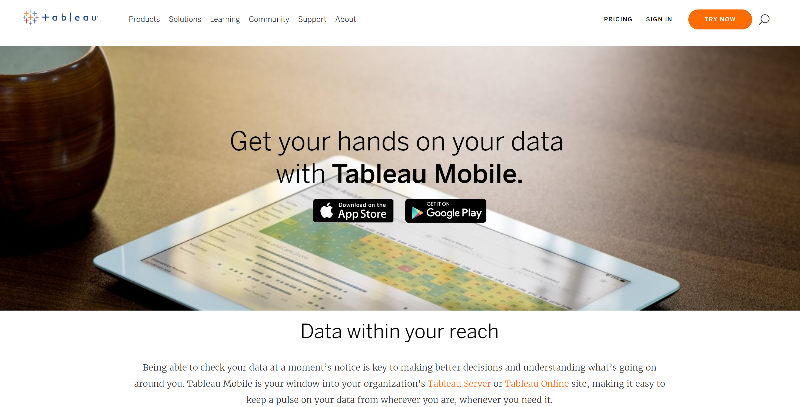
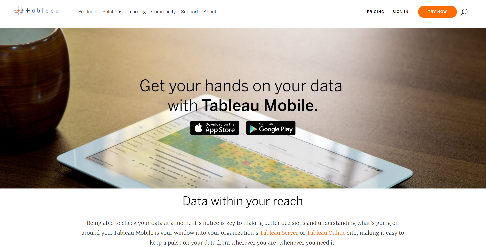
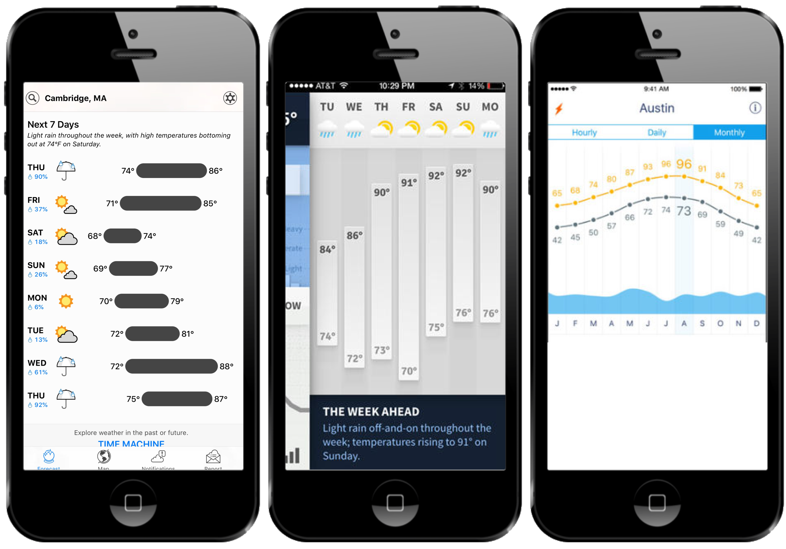
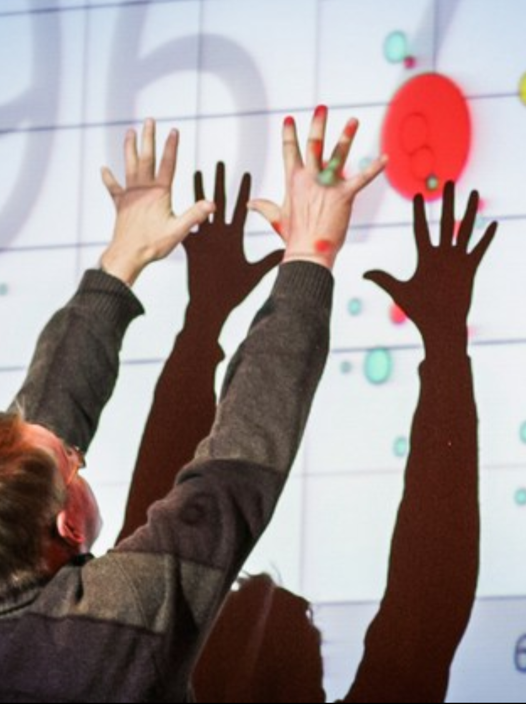
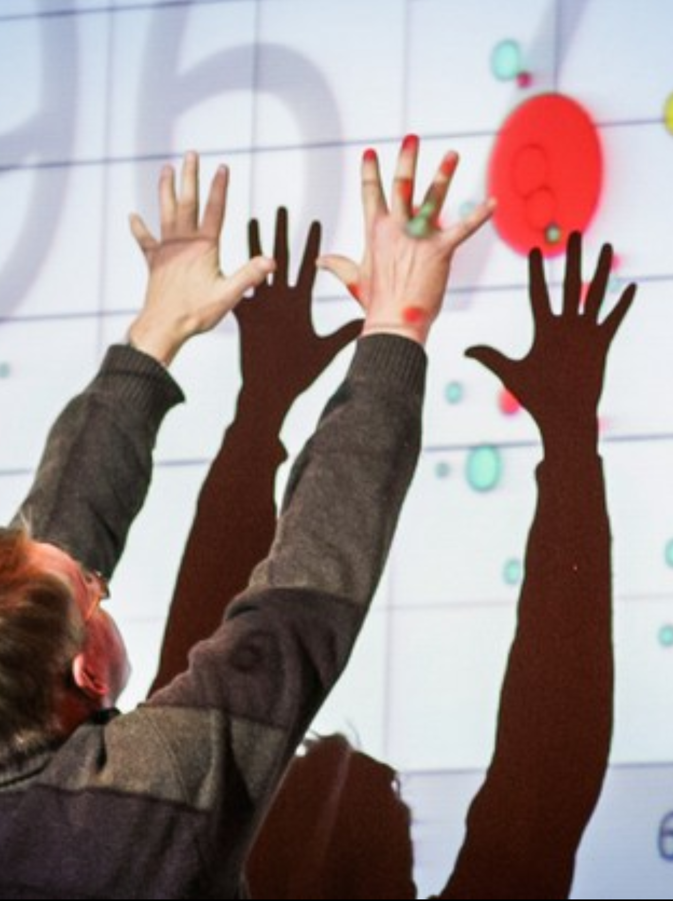
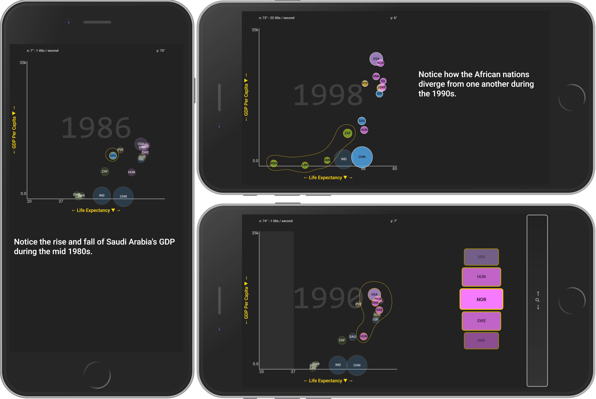

Visualizing Information on Mobile Phones
Recent Experiments, Novel Interactions, & Prospects for the Future
Matthew Brehmer · Microsoft Research · mabrehme@microsoft.com
 Presentation at Microsoft Research 2019-03-13
Presentation at Microsoft Research 2019-03-13
Outline
· Context & motivation: Visualization on mobile devices
· Experimental research #1: Ranges over time
· Experimental research #2: Animation vs. small multiples
· Interaction research: Tilting, brushing, & dialing
· Prospects for the future
Scope of My Visualization Research
Considerations & tools for expressive information design:
· Timeline Storyteller - C+J 19 | DataToon - CHI 19 | Charticulator - TVCG 19 | ChartAccent - PVIS 17 | Timelines Revisited - TVCG 17 | TimeLineCurator - TVCG 16
Visualizing information on mobile devices:
· Ranges Over Time - TVCG 19 | Animation vs. Small Multiples - working paper | Novel Interactions with Time-Varying Data - in preparation
Evaluating visualization (tools):
· Data-Driven Stories - DDS 18 | Visualization Authoring Systems - BELIV 18 | Variants of Multi-Series Bar Charts - CHI 18 |
· Overview: A Document Mining Tool for Journalists - TVCG 14 | Pre-Design Empiricism for Visualization - BELIV 14
Visualization task analysis:
· A Typology of Abstract Visualization Tasks - TVCG 13 | Visualizing Dimensionally-Reduced Data - BELIV 14
Visualizing resource consumption:
· Workflows for Energy Portfolio Analysis - TVCG 16
Scope of My Visualization Research
Considerations & tools for expressive information design:
· Timeline Storyteller - C+J 19 | DataToon - CHI 19 | Charticulator - TVCG 19 | ChartAccent - PVIS 17 | Timelines Revisited - TVCG 17 | TimeLineCurator - TVCG 16
Visualizing information on mobile devices:
· Ranges Over Time - TVCG 19 | Animation vs. Small Multiples - working paper | Novel Interactions with Time-Varying Data - in preparation
Evaluating visualization (tools):
· Data-Driven Stories - DDS 18 | Visualization Authoring Systems - BELIV 18 | Variants of Multi-Series Bar Charts - CHI 18 |
· Overview: A Document Mining Tool for Journalists - TVCG 14 | Pre-Design Empiricism for Visualization - BELIV 14
Visualization task analysis:
· A Typology of Abstract Visualization Tasks - TVCG 13 | Visualizing Dimensionally-Reduced Data - BELIV 14
Visualizing resource consumption:
· Workflows for Energy Portfolio Analysis - TVCG 16
Scope of My Visualization Research
Considerations & tools for expressive information design:
· Timeline Storyteller - C+J 19 | DataToon - CHI 19 | Charticulator - TVCG 19 | ChartAccent - PVIS 17 | Timelines Revisited - TVCG 17 | TimeLineCurator - TVCG 16
Visualizing information on mobile devices:
· Ranges Over Time - TVCG 19 | Animation vs. Small Multiples - working paper | Novel Interactions with Time-Varying Data - in preparation
Evaluating visualization (tools):
· Data-Driven Stories - DDS 18 | Visualization Authoring Systems - BELIV 18 | Variants of Multi-Series Bar Charts - CHI 18 |
· Overview: A Document Mining Tool for Journalists - TVCG 14 | Pre-Design Empiricism for Visualization - BELIV 14
Visualization task analysis:
· A Typology of Abstract Visualization Tasks - TVCG 13 | Visualizing Dimensionally-Reduced Data - BELIV 14
Visualizing resource consumption:
· Workflows for Energy Portfolio Analysis - TVCG 16
Visualization on Mobile Devices
The Practice of Visualizing Data on Mobile Devices
Visualization is increasingly prevalent in mobile apps, mobile-first news sites*.

 mobilev.is (Irene Ros) |
mobileinfovis.com (Sebastian Sadowski)
mobilev.is (Irene Ros) |
mobileinfovis.com (Sebastian Sadowski)*In 2017, 45% of Americans regularly consume news from a mobile device (Pew Research Center)
Seattle Times traffic in mid-2017: 42% Mobile, 11% Tablet, 47% Desktop (Thomas Wilburn)
The Practice of Visualizing Data on Mobile Devices
 Data Visualization and the News. Gregor Aisch (NY Times) @ Information+ Conf. 2016
Data Visualization and the News. Gregor Aisch (NY Times) @ Information+ Conf. 2016
vimeo.com/182590214
Mobile Business Intelligence
 
powerbi.microsoft.com/mobile | tableau.com/products/mobile
Research on Visualizing Data for Mobile Devices
There is little previous work focusing on mobile devices in the visualization research literature.
 Data Visualization on Mobile Devices. CHI 2018 Workshop organized by
Data Visualization on Mobile Devices. CHI 2018 Workshop organized by B. Lee, M. Brehmer, E. K. Choe, P. Isenberg, R. Langer, and R. Dachselt.
mobilevis.github.io
"Is Timeline Storyteller Mobile-Friendly?"
Timeline Storyteller: The Design & Deployment of an Interactive Authoring Tool for
Expressive Timeline Narratives.
Brehmer, Lee, Henry Riche, Tittsworth, Lytvynets, Edge, and White. In Proc. Comp. + Journalism 2019.
 timelinestoryteller.com | github.com/Microsoft/timelinestoryteller
timelinestoryteller.com | github.com/Microsoft/timelinestoryteller
Which Design Choices are Suitable for Mobile?
Timelines Revisited: A Design Space and Considerations for Expressive Storytelling.
M. Brehmer, B. Lee, B. Bach, N. Henry Riche, and T. Munzner. In IEEE TVCG 2017.
Representation


Scale


Layout


Outline
· Context & motivation: Visualization on mobile devices
· Experimental research #1: Ranges over time
· Experimental research #2: Animation vs. small multiples
· Interaction research: Tilting, brushing, & dialing
· Prospects for the future
Experiment 1: Ranges Over Time
Visualizing Ranges over Time on Mobile Phones: A Task-Based Crowdsourced Evaluation.
M. Brehmer, B. Lee, P. Isenberg, and E. K. Choe. In IEEE TVCG 2019 (Proc. InfoVis 2018).

aka.ms/ranges-tvcg
 Images (clockwise from left): The New York Times · Eric Boam · Randy Olson.
Images (clockwise from left): The New York Times · Eric Boam · Randy Olson.
Ranges in Weather Apps
 Apps: Dark Sky © · Weathertron © · Weather Line ©.Ranges in Sleep Tracking Apps
 Apps: Azumio Sleep Time © · Garmin Connect © · Bedtime (iOS Clock) ©.
Apps: Azumio Sleep Time © · Garmin Connect © · Bedtime (iOS Clock) ©.
Ranges and Radial Representations
 Image: Weather Radials (by Timm Kekeritz) ©.
Image: Weather Radials (by Timm Kekeritz) ©.
 Images: mobileinfovis.com by Sebastian Sadowski, 2018.
Images: mobileinfovis.com by Sebastian Sadowski, 2018.
A Crowdsourced Experiment on Mobile Phones
The first crowdsourced visualization evaluation study performed exclusively on phones. Image: newkemall (flickr, cc by).

Experiment Tasks
· Locate Dates
· Identify Values
· Locate Extreme Values
· Compare Values
· Compare Ranges
Tasks derived from A Multi-Level Typology of Abstract Visualization Tasks.
M. Brehmer and T. Munzner. In IEEE TVCG (InfoVis 2013).
Dependent Measures
For each trial:
Trial completion time
Response accuracy
At each level of granularity:
Preference: Linear or Radial
Confidence: Low to High
Participants
Temperature (N = 40), Sleep (N = 47)
84 trials per participant, using their own phone.
Radial or Linear?
Detailed statistics are provided in:
Visualizing Ranges over Time on Mobile Phones: A Task-Based Crowdsourced Evaluation.
M. Brehmer, B. Lee, P. Isenberg, and E. K. Choe. In IEEE TVCG (InfoVis 2018).
aka.ms/ranges-tvcg.
People are, in general, slower with radial representations.
Accuracy appears to be data- and task-dependent:
e.g., less accurate with radial when locating values in absence of seasonal variation.
People prefer and are more confident with linear representations.
Week vs. Month vs. Year
Detailed statistics are provided in:
Visualizing Ranges over Time on Mobile Phones: A Task-Based Crowdsourced Evaluation.
M. Brehmer, B. Lee, P. Isenberg, and E. K. Choe. In IEEE TVCG (InfoVis 2018).
aka.ms/ranges-tvcg
People are typically slower with a month than with a week of ranges.
For some tasks, people were less accurate with a month than with a year.
e.g., seasonal variation in annual temperature appears to be beneficial for locating extreme values.

Conclusions: Ranges Over Time on Mobile Phones
Is a cycle meaningful in the context of the data?
Does the task involve locating values? Or comparing them?
Is efficiency important?
Locating values quickly? → Choose Linear.
Comparing values (and unconcerned with speed)? → Choose Radial or Linear.
aka.ms/ranges | (mobile only) experimental app.
github.com/Microsoft/RangesOnMobile | open source app and analysis.
medium.com/multiple-views-visualization-research-explained | blog post for practitioners.
Outline
· Context & motivation: Visualization on mobile devices
· Experimental research #1: Ranges over time
· Experimental research #2: Animation vs. small multiples
· Interaction research: Tilting, brushing, & dialing
· Prospects for the future
Experiment 2: Animation vs. Small Multiples
A Comparative Eval. of Animation & Small Multiples for Trend Visualization on Mobile Phones.
M. Brehmer, B. Lee, P. Isenberg, and E. K. Choe. Working paper (InfoVis 2019 Submission).

 aka.ms/multiples-infovis (working paper, do not redistribute).
aka.ms/multiples-infovis (working paper, do not redistribute).
The Rise of the Data GIF


 Sources (L → R): The Washington Post | Cornell Lab of Ornithology | Pew Research Center.
Sources (L → R): The Washington Post | Cornell Lab of Ornithology | Pew Research Center.
Curated collections of Data GIFs:
lenagroeger.com/datagifs Lena Groeger (ProPublica, NICAR Tutorial 2017)
pinterest.com/jsvine/datagifs Jeremy Singer-Vine (Buzzfeed)
Animation on Mobile, Small Multiples on Desktop?

 Data viz solutions: small multiples on desktop, GIFs on yer phone!
Data viz solutions: small multiples on desktop, GIFs on yer phone! Brian Boyer (NPR News Graphics, 2015).
Prior Work: Animation vs. Trails vs. Small Multiples
 
Effectiveness of Animation in Trend Visualization.

Effectiveness of Animation in Trend Visualization. G. Robertson, R. Fernandez, D. Fisher, B. Lee, and J. Stasko. IEEE TVCG (Proc InfoVis 2008).
Inspired by Hans Rosling's 2006-07 TED Talks | Test-of-Time Award recipient at InfoVis 2018.
Prior Work: Animation vs. Trails vs. Small Multiples
 Effectiveness of Animation in Trend Visualization.
Effectiveness of Animation in Trend Visualization. G. Robertson, R. Fernandez, D. Fisher, B. Lee, and J. Stasko. IEEE TVCG (Proc InfoVis 2008).
Lab Experiment:
2 Settings (Analysis vs. Presentation) | 3 Design conditions | 2 Dataset sizes (80, 18) | 24 Tasks
Notable results: Analysis performance higher with multiples; participants preferred animation.
A Crowdsourced Experiment on Mobile Phones
A crowdsourced visualization evaluation study performed exclusively on phones.
Crowdsourced Experiment:1 Context | 2 Design conditions | 1 Dataset size (16) | 13 Tasks (3 Training, 1 QA, 9 Test)
Tasks 1 → 3
 Tasks adapted from Robertson et al (IEEE TVCG 2008).
Tasks adapted from Robertson et al (IEEE TVCG 2008).
Tasks 4 → 6
 Tasks adapted from Robertson et al (IEEE TVCG 2008).
Tasks adapted from Robertson et al (IEEE TVCG 2008).
Tasks 7 → 9
Tasks adapted from Robertson et al (IEEE TVCG 2008).
5-Stage Task Format
Show instruction & axes → 5s delay → Start → Select 1 - 3 countries → Done

Dependent Measures
For each task:
Trial completion time
(Partial) accuracy
At the end of the experiment:
Confidence: Low to High
Ease of using the charts: Low to High
96 Participants
Small Multiples (N = 45), Animation (N = 51)
+17 excluded participants who responded incorrectly to quality assurance task.
Animation or Small Multiples?
Detailed statistics are provided in:
A Comparative Eval. of Animation & Small Multiples For Trend Visualization on Mobile Phones.
M. Brehmer, B. Lee, P. Isenberg, and E. K. Choe. Working paper (InfoVis 2019 Submission).
aka.ms/multiples-infovis (do not redistribute).
Participants were faster with Small Multiples (for 7 of 9 tasks). No difference in remaining 2 tasks.
Comparable accuracy between Animation and Small Multiples for 5 tasks.
Higher accuracy with Animation for 2 tasks. Higher with Small Multiples for remaining 2 tasks.
Participants were slightly more confident with Animation.
No Completion Time Differences in Tasks 4 & 7
Small Multiples (N = 45) | Animation (N = 51) | Ratio / Difference (Effect Size)
Note that both tasks involve targets having trajectories that reverse course,
Unlike the targets in the other 7 tasks.
Higher Accuracy with Small Multiples in Tasks 3 & 5
 Small Multiples (N = 45) | Animation (N = 51) | Ratio / Difference (Effect Size)
Small Multiples (N = 45) | Animation (N = 51) | Ratio / Difference (Effect Size)
Note both tasks involve comparing ∆Ys: a ∆Y with no ∆X (Task 3) or the 2 largest ∆Y values (Task 5).
Higher Accuracy with Animation in Tasks 1 & 8
Small Multiples (N = 45) | Animation (N = 51) | Ratio / Difference (Effect Size)
Both tasks involve assessing both ∆Y and ∆X: target trajectories quite different from distractors.
Conclusions: Animation or Small Multiples?
Results call into question the "small multiples on the desktop, animation on the phone" pattern.
Surprisingly, small multiples are still viable on small displays.
They may be particularly well suited for distance and angle comparisons.
Animation and small multiples are comparably accurate in many cases.
Animation may be preferable for cases of outlier trajectories and reversals.
aka.ms/multiples | (mobile only) experimental app.
github.com/Microsoft/MobileTrendVis | open source app and analysis.
aka.ms/multiples-infovis | working paper (do not redistribute).
Outline
· Context & motivation: Visualization on mobile devices
· Experimental research #1: Ranges over time
· Experimental research #2: Animation vs. small multiples
· Interaction research: Tilting, brushing, & dialing
· Prospects for the future
Recent Arguments Against Interactive Visualization
In presentation (i.e, news reading) contexts, most people don't interact with visualization content.
At the Malofiej Infographics World Summit, "The best form of storytelling is often static".
Laura Hazard Owen (NiemenLab) quoting Archie Tse (NY Times), 2016
goo.gl/zMfHk5
Data Visualization and the News. Gregor Aisch (NY Times) @ Information+ Conf. 2016
vimeo.com/182590214
Emotional Statistics. Neil Halloran ("The Fallen of WWII"), Tapestry Conf. Keynote 2017
youtu.be/TCqcpL8F99k
The Death of Interactive Infographics?. Dominikus Baur, Medium, 2017.
aka.ms/baur-medium
Desktop WIMP interactions likely inappropriate; many will consume content from mobile devices.
Interactive Mobile BI is in Demand
powerbi.microsoft.com/mobile | tableau.com/products/mobile
Mobile Visualization Interaction Sketches
Tilting, Brushing, & Dialing Interactions for Data Visualization on Mobile Phones.
M. Brehmer, B. Lee, K. Hinckley, and C. Collins. (Work in progress, 2019).
Interaction Research: "Mo'Bubble"
Tilting, Brushing, & Dialing Interactions for Data Visualization on Mobile Phones.
M. Brehmer, B. Lee, K. Hinckley, and C. Collins. (Work in progress, 2019).

Y-axis tilting in portrait or landscape; X-axis tilting for list navigation. aka.ms/mobubble | (mobile only) demonstration app.
Tilt, Brush, Select, & Dial at aka.ms/mobubble
Mo'Bubble: Interaction Inspiration
wikipedia.org/wiki/Lenticular_printing | wikipedia.org/wiki/Ball-in-a-maze_puzzle
Mo'Bubble Satya Demo at TechFest 2019
TechFest 2019 exhibit by M. Pahud, K. Hinckley, M. Brehmer, C. Holz, N. Henry Riche, and B. Buxton.

Mo'Bubble: Next Steps
Tilting, Brushing, & Dialing Interactions for Data Visualization on Mobile Phones.
M. Brehmer, B. Lee, K. Hinckley, and C. Collins. (Work in progress, 2019).
Evaluaton with human subjects in a controlled setting.
Comparison with scrubbing / swiping interactions with varying numbers of time steps / list items.
Experimentation with other data types / chart types: e.g., dynamic networks, symbol maps.
aka.ms/mobubble | (mobile only) demonstration app.
Planned submission to IEEE InfoVis 2019 (short paper track) or CHI 2020.
Outline
· Context & motivation: Visualization on mobile devices
· Experimental research #1: Ranges over time
· Experimental research #2: Animation vs. small multiples
· Interaction research: Tilting, brushing, & dialing
· Prospects for the future
An Open-Source Framework for Crowdsourced Mobile Visualization Experiments
Ranges, Animation vs. Small Multiples, Mo'Bubble applications share common infrastructure:
· Node.js web application
· Custom event logging
· Media queries to enforce mobile-only
· Condition assignment & re-balancing
· Handlers for orientation changes
Application developer to focus on:
· Isolated chart component
· Defining trial logic
· Trial bank initialization
Mobile-only alternative (or extension of) the experimentr framework?
experimentr. L. Harrison, C. Gramazio, F. Yang, K. Aragam, E. Peck, and D. Schroeder (2019).
github.com/codementum/experimentr
Visualization for Mobile Devices: Future Experiments
Smaller Multiples: Assessing Multidimensional Glyph Design on Mobile Phones.
M. Brehmer, B. Lee, P. Isenberg, and E. K. Choe. (Future work).
 Images CW from top left: StressScan, Clue, FitBit Surge, Activity, Sleep++, Daily Goals.
Images CW from top left: StressScan, Clue, FitBit Surge, Activity, Sleep++, Daily Goals.
Interacting with Other Data Types on Mobile Phones
Graph Exploration on Mobile Phones.
P. Eichmann, D. Edge, N. Evans, M. Brehmer, and B. Lee. (Work in progress, 2019).
"Orchard", a mobile web application for pivoting over graphs (e.g., IMDB metadata).
What Makes a Good Visualization Thumbnail?
A Study on Designing Visualization Thumbnails.
H. Kim, J. Oh, Y. Han, S. Ko, M. Brehmer, and B. C. Kwon. (InfoVis 2019 submission).
pudding.cool | fivethirtyeight.com
Mobile-First & Responsive Authoring Tools
Recreate: An Interactive Authoring Tool for Responsive Map-Based Data Stories.
K. Badam, B. Lee, N. Henry Riche, M. Brehmer, K. Hinckley, and C. Collins. (Work in progress, 2019).
Responsive Interactive Documents
msrinteractivescience.com (related initiatives: distill.pub | parametric.press) R: Screenshots of my work in progress responsive MSR Interactive Science article in support of:
Forecasting U.S. Domestic Migration Using Internet Search Queries.
A. Y. Lin, J. Cranshaw, and S. Counts. Proc. Web Conf. 2019.
Visualization & MSR's Urban Innovation Initative
aka.ms/urbaninnovation
Opportunity to revisit my PhD project on resource consumption; e.g., mobile analysis tools for RE+F.
Matches, Mismatches, and Methods: Multiple-View Workflows for Energy Portfolio Analysis.
M. Brehmer, J. Ng, K. Tate, and T. Munzner. IEEE TVCG (2016, Proc. InfoVis 2015).
Why Visualization on Mobile Devices?
· In demand in journalism, education, scientific communication, & business intelligence
· There is little (visualization) research to support design choices
· Researchers need tools to conduct experiments
· Practitioners need tools to create mobile-first and responsive visualization content
· Unexplored directions for interaction design
Visualizing Information on Mobile Phones
Recent Experiments, Novel Interactions, & Prospects for the Future
Matthew Brehmer · Microsoft Research · mabrehme@microsoft.com
Presentation at Microsoft Research 2019-03-13
Reflection: 2+ Years at MSR
Timeline Storyteller:
· Deployed an open-source visualization authoring tool to the web
· Released as a Power BI custom visual (35K+ downloads as of early 2019)
· Featured in opening keynote of 2017 Microsoft Data Insights Summit
Research Goals:
· Initiated a new research program in visualization for mobile devices
· A return to quantitative experimental work
· Acquired new skills in crowdsourced experimentation, inferential statistics
Reflection: 2+ Years at MSR (cont.)
Collaborations:
· 7 PhD interns, 3 visiting faculty researchers
· Charticulator, DataToon, ChartAccent, InkSight, Orchard, Barhopper, Recreate
· EPIC, VIDA, MSR Special Projects, Power BI, Microsoft Modern (Data) Journalism Team
· Academic colleagues in USA, Canada, UK, France, Germany, & Korea
· Timeline Consortium
Community:
· Speaking & demoing at practitioner events (e.g., OpenVisConf, Tapestry, Uber Vis Nights)
· Co-organized VisInPractice (2018-19), PacificVis Data Storytelling Contest (2017-18)
· PC Member of IEEE InfoVis, Information+, VIS Arts Program, Computation + Journalism, others...
Visualizing Information on Mobile Phones
Recent Experiments, Novel Interactions, & Prospects for the Future
Matthew Brehmer · Microsoft Research · mabrehme@microsoft.com
Presentation at Microsoft Research 2019-03-13
Supplemental
Ranges Over Time on Mobile Phones
Detailed Experimental Design and Results Slides
Contemperaneous Work: Animation & Outliers
Saliency Deficit and Motion Outlier Detection in Animated Scatterplots.
Veras and Collins. To appear in Proc ACM CHI 2019.
 Notable results: Visual channels (size, color, etc.) interfere w/ outlier detection to varying extents.
Notable results: Visual channels (size, color, etc.) interfere w/ outlier detection to varying extents. Direction contributes most to speed outliers, position contributes most to direction outliers.